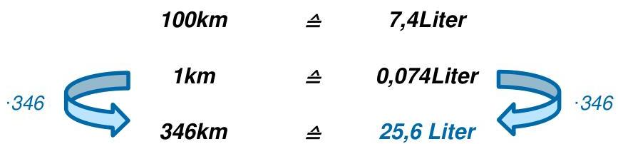
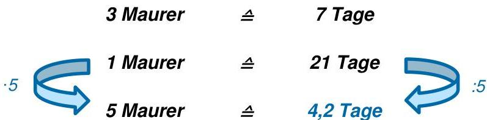

Skript-Bezug


Kapitel 3.1 (proportional), 3.2 (umgekehrt proportional), 3.3 (Aufgaben 1–24).
Merke: Proportional: links ÷a, rechts ÷a ··· dann ×c / ×c.
Umgekehrt proportional: links ÷a, rechts ×a ··· dann ×c / ÷c.
Fall erkennen (Mini-Quiz)
Wähle pro Aussage den richtigen Fall. „Prüfen“ zeigt nur OK/Nicht OK (keine Lösungsausgabe).
| Aussage | Dein Entscheid | Prüfen | Feedback |
|---|
Dreisatz-Maschine (Stepper + Pfeile)
Rechne Schritt für Schritt. Im Übungsmodus bleibt das Endresultat verborgen – du gibst x
ein und prüfst.
Tipp: Erst entscheiden (proportional/umgekehrt) – dann die Pfeillogik anwenden.
Slider-Szenarien (3–5)
Wähle ein Szenario. Standard ist Übungsmodus (Resultat verborgen). Im Demo-Modus wird das Resultat live angezeigt.
Im Übungsmodus bleibt hier ein Strich – aktiviere Demo-Modus.
Self-Check: Aufgaben 1–24 (Kap. 3.3)
Eingaben sind leer. „Prüfen“ zeigt OK/Nicht OK + Tipp. Lösungen sind nur in „Lösung anzeigen“ sichtbar.